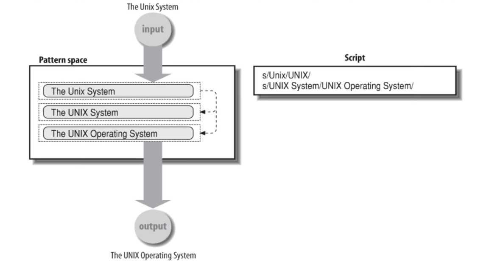

sed
Table of Contents
Intro
sed ("stream editor") is a batch-mode text editor.
- mostly used for substitution
- input from command line files and/or stdint
- editing commands from command line and/or script
- ouput to stdout
- original input files are unchanged
- large command set
- primary command is
s(substitute) for text replacements
Input flow

Options
-f scriptreads commands fromscript-e 'script'also does that-ndon't print lines by default-iedit files in place-ruse EREs (GNUsed)- … (see man page)
Command structure
<address> <command> [ <operands> [ <flags> ] ]
address:- can be 0, 1 or 2 line numbers, use
$to mean last line - pattern to match (a BRE)
- can be 0, 1 or 2 line numbers, use
command: a single letter (sandpare most useful)operands: different commands take different operandsflags: modifiers forscommand
Substitute command
s / pattern / replacement / [ flags ]
- delimiter is any puntuation character,
/is most commmon- use
\/in pattern or replacement for real/(or other delimiter)
- use
patternis BREreplacementis text to replace matched input textflagsare optional modifiers
Replacement
- empty - matched text is deleted
- plain text- matched text is replaced by contents
&in replacement text means "text matching the pattern"\&is a real&\1through\9- matching\(...\)in the BRE\\is real\
Flags
- by default, substitution replaces first ocurrence only
- portable flags are:
greplace every match on input linedigitreplace nth match on input line
ifor ignore case
Robustness
- stick to BREs and simple use of
sedfor portability and readability - keep editing commands on the
sedcommand line to make you script more self-contained and readable
Examples
Matching and removing
grep '/home/' /etc/passwd | # find real users sed 's/:.*//' | # remove everything after user name sort -u
nasreddin
Printing
sed -n '/nas/p' /etc/passwd # print lines that match 'nas'
nasreddin:x:1000:1000::/home/nasreddin:/usr/bin/zsh
Quit command
# head --- print first n lines count=$1 # 'q' for quit at line $1 sed "${count}q" $2
./head 5 /etc/passwd
root:x:0:0::/root:/usr/bin/zsh bin:x:1:1::/:/usr/bin/nologin daemon:x:2:2::/:/usr/bin/nologin mail:x:8:12::/var/spool/mail:/usr/bin/nologin ftp:x:14:11::/srv/ftp:/usr/bin/nologin
We could also use -n for printing n lines. Here we print lines 1 through 5:
sed -n '1,5p' /etc/passwd
root:x:0:0::/root:/usr/bin/zsh bin:x:1:1::/:/usr/bin/nologin daemon:x:2:2::/:/usr/bin/nologin mail:x:8:12::/var/spool/mail:/usr/bin/nologin ftp:x:14:11::/srv/ftp:/usr/bin/nologin
Generate commands
user=$1 find "/home/$user" -type -d -print 2> /dev/null | # get dir list sed "s;/home/$user;&-back;" | # change name sed "s/^/mkdir /" # inserted mkdir command
./make-backups.sh nasreddin | head -n 3
mkdir /home/nasreddin mkdir /home/nasreddin/Downloads mkdir /home/nasreddin/Downloads/rofi mkdir /home/nasreddin/Downloads/rofi/theme mkdir /home/nasreddin/Downloads/rofi/.git